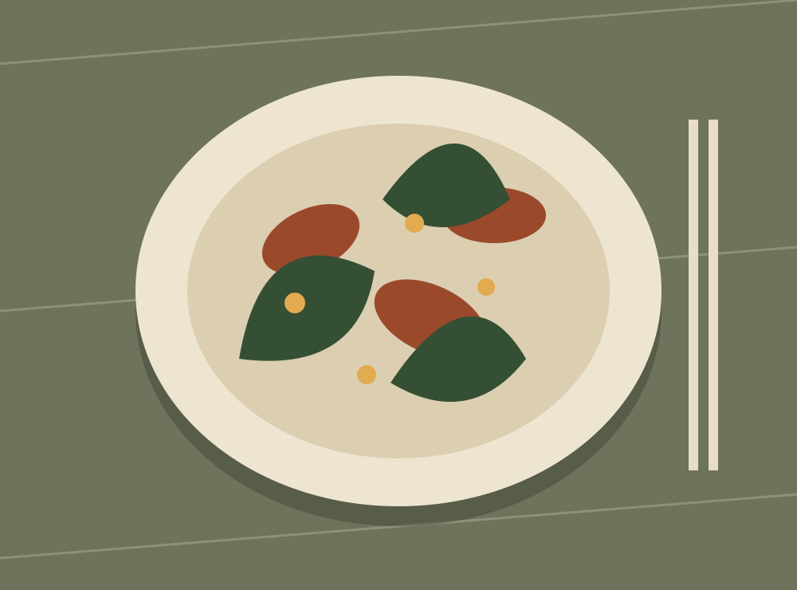

A place at the table
Rooted in plants.
Made for gathering.
Seasonal plates, generous conversation, and an evening that takes its time.
Explore Los Angeles
Our restaurant
Los Angeles
A warm neighborhood dining room, with a menu shaped by the season.
Hours & visitReservations demo
Vegetables, at the center
Familiar comfort.
A fresh perspective.
Roasted roots, handmade pasta, crisp greens. Our fictional kitchen celebrates the pleasure of a shared meal.
View dinner menuOur story